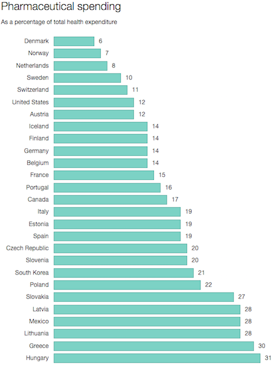

Why does Hungary spend so much on pharmaceuticals?
by Jennifer Guay

With 31% of its total health budget going to pharmaceuticals, Hungary spends nearly double the OECD average on drugs. There are many reasons that could explain why a lower-income country is spending more than its wealthier OECD peers on medicine – but Hungary’s case is a unique one, largely due to the cancerous corruption that grips its health sector, a holdover from the state’s decades-gone socialist regime.
In October 2013, the European Commission released a study on health sector corruption that linked Hungary’s tax-funded universal healthcare system to widespread bribery, illegal equipment sales, and unethical “authorisation and procurement of pharmaceuticals.”
Of the Hungarians surveyed, 70% agreed that “giving and taking of bribes and the abuse of positions of power for personal gain are widespread among people working in the public healthcare sector.”
Forty-four per cent of interviewees said that they had made under-the-table payments during hospital visits in the last year. The elderly and those in bad health paid the most.
“There are certainly a number of countries – particularly during the economic crisis, and since 2008, 2009 – where the pharmaceutical sector has been one area where there is a need for more regulation and more controls put on pharmaceuticals, both purchasing and prescribing,” said David Morgan, Head of Health Accounts at the OECD.
Since the economic crisis, health spending in all OECD countries has stalled – but low-income countries still have to spend a bulk of their budget on pharmaceuticals, for two principal reasons.
First, labour costs are lower: doctor, nurse, and medical staff salaries swallow less of the overall budget. Second, every country pays a standardized price for non-generic drugs.
Hungary’s pharmaceutical expenditure is the highest in the OECD, despite efforts decrease public spending. The country has cut mark-ups for distributors, introduced incentives for prescribing generics, and increased co-payment costs, which rose from 40% to 45% between 2010 and 2013.
Meanwhile, the number of practicing pharmacists has increased from 48 to 76 per 100,000 inhabitants from 2000 to 2013.
According to Morgan, the reason for Hungary’s high share of spending on drugs could all boil down to the country’s norms: “Doctors, practices – the way that they prescribe drugs is down to some cultural factors,” said Morgan. “In different countries, you may go to a doctor and there’ll be an expectation for patients to come away with a whole list of drugs.”